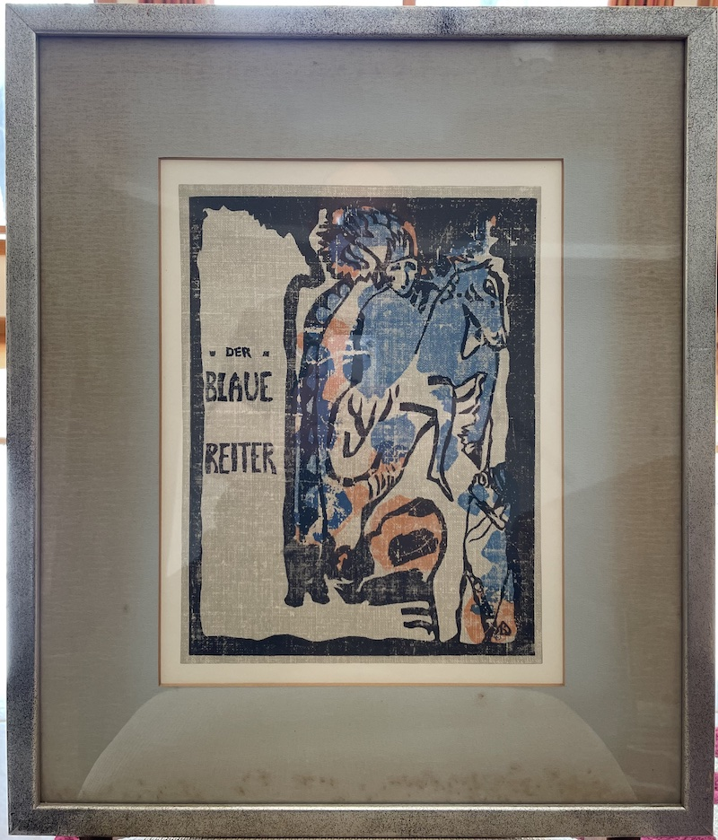

Life: 1866-1944
Born in Moscow, and lived in Germany and France.
A pioneer of abstract western art. Cofounded the artist group Der Blaue Reiter/The Blue Rider

| Height | Width | |
|---|---|---|
| Inches | 12 | 9 |
| Cm | 30 | 23 |
| Image | Size (MB) |
Width pixels |
Height pixels |
|---|